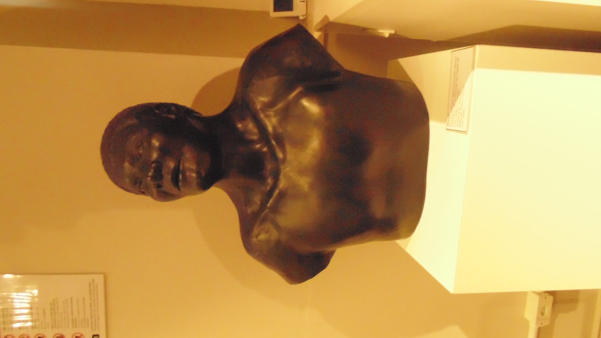

Por que existe o Dia da Consciência Negra?
Todo 20 de novembro, o Brasil para para lembrar Zumbi dos Palmares. Mas a data guarda uma pergunta mais profunda: por que, mais de 130 anos depois da abolição, ainda é preciso um dia inteiro para falar de consciência negra?
Zumbi e Palmares
O 20 de novembro marca a morte de Zumbi, líder do Quilombo dos Palmares, assassinado em 1695. Palmares foi um dos maiores e mais duradouros espaços de liberdade construídos por pessoas escravizadas no Brasil colonial. Zumbi tornou-se símbolo da resistência negra e da luta contra a escravidão.
Uma data escolhida como resposta ao 13 de Maio
Durante muito tempo, a data lembrada era o 13 de maio de 1888, dia da Lei Áurea. O problema é que a abolição não veio acompanhada de terra, escola, trabalho ou reparação. Pessoas libertas foram deixadas à própria sorte, enquanto o Estado incentivava a imigração europeia e teorias racistas diziam que o Brasil precisava "embranquecer".
Foi por isso que, em 1971, em Porto Alegre, o poeta Oliveira Silveira e o Grupo Palmares propuseram o 20 de novembro como alternativa. A ideia era trocar a imagem da liberdade "concedida" pela da liberdade conquistada, contada a partir da resistência negra e não da assinatura de uma princesa.
De reivindicação a lei
A data demorou décadas para ser reconhecida. Em 2003, a Lei 10.639 tornou obrigatório o ensino de história e cultura afro-brasileira nas escolas. Em 2011, a Lei 12.519 instituiu o Dia Nacional de Zumbi e da Consciência Negra. Em dezembro de 2023, a Lei 14.759 o transformou em feriado nacional, valendo para todo o país a partir de 2024. É resultado de mais de 50 anos de organização do movimento negro.
E aqui, em Santa Catarina e em Itajaí?
Santa Catarina costuma ser retratada como um estado de colonização europeia, e isso apagou a presença negra da narrativa oficial. Mas ela sempre esteve aqui. Em 1812, mais de 22% da população catarinense era escravizada. Em Itajaí, em 1838, eram quase 10%.
A cidade carrega essa história em seus símbolos. A Igrejinha Velha, um dos marcos mais antigos de Itajaí, teria sido construída por Simeão, uma pessoa escravizada. Depois da abolição, o racismo continuou organizando a vida social: a Sociedade Guarani, clube da elite local, ficou conhecida por barrar a entrada de pessoas negras, e há registro de que isso ainda ocorreu em 1987, décadas depois da primeira lei contra a discriminação racial.


Sociedade Sebastião Lucas: um território negro de lazer e resistência
A comunidade negra respondeu criando seus próprios espaços. Primeiro vieram o Clube de Regatas Cruz e Sousa, primeira organização náutica de Santa Catarina formada por negros, e o Humaitá Futebol Clube. Quando essas entidades se encerraram, a população afrodescendente ficou sem um território próprio de convivência, até a abertura da Sociedade Cultural e Beneficente Sebastião Lucas, nos anos 1950.
O nome homenageia Sebastião Lucas Pereira, filho de ex-escravizados e trabalhador do porto. Ele foi presidente da Sociedade Beneficente XV de Novembro, primeira sociedade portuária da cidade, entre 1921 e 1923, e defendeu melhores condições de trabalho. A sociedade que leva seu nome foi muito além de um clube: abrigou bailes, aniversários, casamentos, tardes dançantes e encontros como o "Chá das Crentes", organizado pelas mulheres. Também era um espaço de valorização pessoal, onde as pessoas podiam se vestir bem e ser reconhecidas. Recebia caravanas de várias cidades, como Joinville, Florianópolis, Jaraguá do Sul, Criciúma e Laguna.
Depois de uma crise financeira entre o fim dos anos 1990 e o início dos anos 2000, o Movimento Negro de Itajaí se mobilizou, e o clube foi tombado como patrimônio cultural do município em 8 de junho de 2007. Segue ativo, mesmo com dificuldades.
Núcleo Afrodescendente Manoel Martins dos Passos da Foz do Itajaí e a Virada Afrocultural
A luta pelo reconhecimento do Sebastião Lucas foi parte de uma organização mais ampla. Em 2006, o Núcleo Afrodescendente Manoel Martins dos Passos da Foz do Itajaí apresentou uma petição para que a sociedade fosse reconhecida como Lugar de Memória, destacando sua importância para a população negra da cidade. O núcleo segue atuando na preservação da memória negra local, inclusive em encontros como o "Café com Memórias".
Essa organização se mostra também na Virada Afrocultural, evento que reúne atividades de valorização da cultura afro-brasileira e que, em maio de 2025, chegou à 4ª edição. Uma das sedes é o próprio Sebastião Lucas, e a renda de parte da programação ajuda a manter o clube. Ou seja: a história de resistência se renova a cada edição.
Quilombo do Morro do Boi, em Balneário Camboriú
A poucos quilômetros de Itajaí, em Balneário Camboriú, fica uma comunidade que mostra que quilombo não é só passado. O Morro do Boi era conhecido como "Rua dos Negros", e hoje seu bairro se chama Nova Esperança. Segundo estudo do Incra, os quilombolas teriam se estabelecido ali depois da abolição, em 1888. A comunidade foi certificada como remanescente de quilombo pela Fundação Cultural Palmares, e a defesa do território, tão ligada à falta de acesso à terra depois de 1888, segue como luta atual. As memórias dos moradores, guardadas por histórias orais, ajudam a contar uma história que quase não aparece nos registros oficiais do município.
Mais que um feriado
O Dia da Consciência Negra não existe para que a história negra seja lembrada um dia por ano. Existe para lembrar que ela é história do Brasil inteiro e também da nossa cidade, e que a luta por igualdade segue aberta. Conhecer essa história é o primeiro passo para que ela deixe de ser invisível.